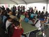

Education
-
USC students begin new semester with ramped up security, closed campus
1/8/13, 4:11 p.m.
Students will return to a closed campus -- meaning after 9 p.m. all people entering the school must show ID.
-
Religion improves high school graduation, college enrollment rates: study
11/2/12, 2:27 p.m.
Researchers found that religious teens are 40 percent more likely to graduate high school than their nonreligious counterparts, and 70 percent more likely to enroll in college.
-
POLL: For low-income families, is vocational training better than a college education?
10/15/12, 4:49 p.m.
Poor parents are more likely to encourage what they consider a more practical route than a traditional college education, says new research.
-
Computers are a 'dangerous tool' in the hands of bullies, says LAPD volunteer
9/21/12, 3:43 p.m.
"It's gotten a lot worse because there are so many tools available to the bullies to use," said volunteer Monica Harmon.
-
Most adults don't consider social isolation to be bullying, says national poll
9/19/12, 10:54 a.m.
And only 56 percent of parents believe social exclusion of a student, which may be linked to school violence and teen suicide, merits school intervention.
-
No LOL matter: Most LAUSD teens who sext are also having sex, says study
9/18/12, 11:30 a.m.
Sending dirty picture and text messages via cell phone should be taught to kids as a "high-risk" behavior, says one LAUSD official.
-
Low-income kids in high-cost areas a recipe for academic struggle: study
8/22/12, 3:50 p.m.
The less money a kid has, and the higher the cost of living is, the more likely it is she or he will struggle academically.
-
Preventing the summer gap: Freedom Schools is in session
7/2/12, 11:53 a.m.
A six-week summer enrichment program looks to help stop the southside's summer slide, a term which refers to the loss of knowledge students experience during the summer break.
-
Sports have major, positive impact on LAUSD academics
6/8/12, 11:45 a.m.
Athletics seem to be key in good LAUSD student performance, according to a district official.
-
Orientation begins for new high school aimed at students at risk of dropping out
6/5/12, 11:03 a.m.
USC's Hybrid High is set to open this fall with a schedule that caters to students with jobs or family obligations.
About Us
OnCentral is a site for the neighborhoods around Central Avenue. It's a news site where we not only provide information, but put the power of storytelling in your hands. Sign up and you can share your story or help an existing story grow by adding in your perspective or corrections.
Follow OnCentral


- Most Viewed
- Most Commented